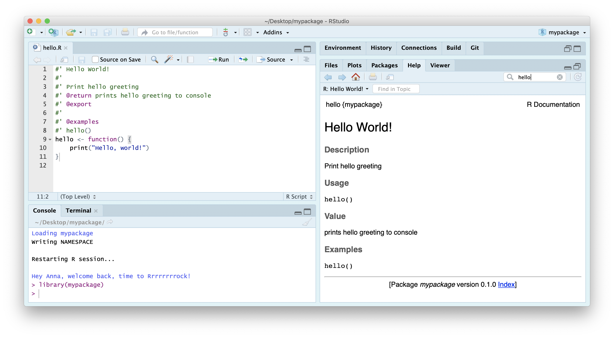
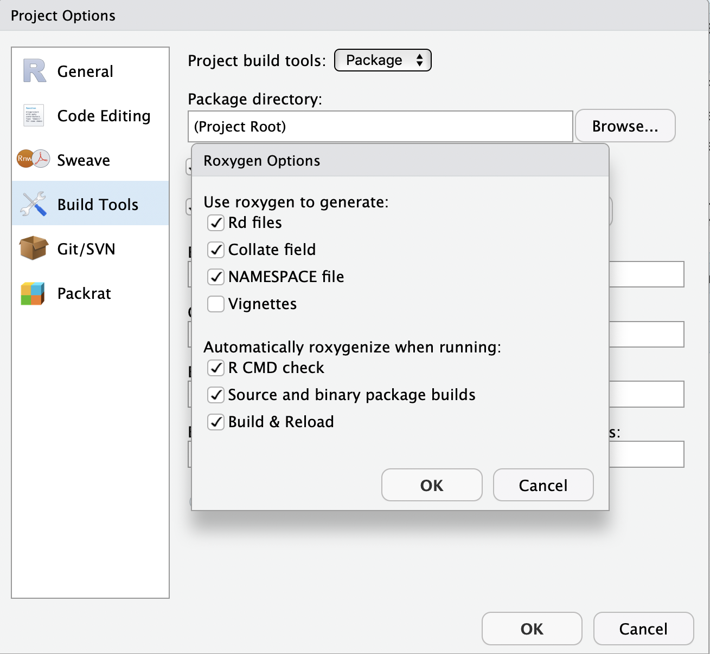
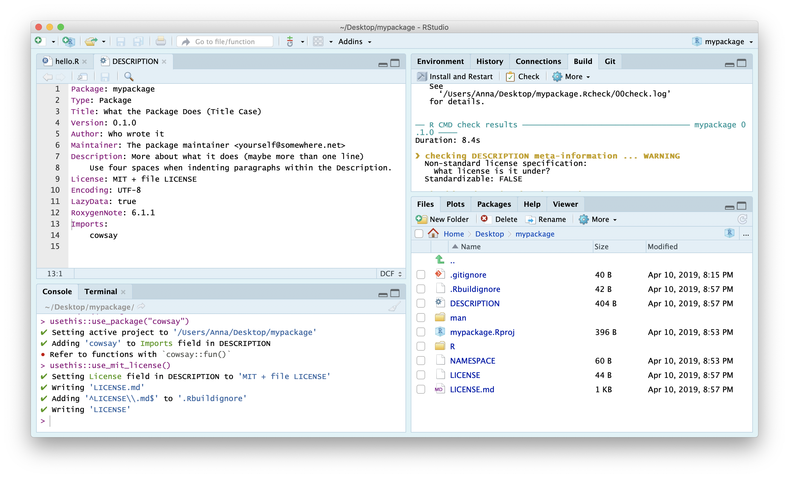

Packaging functionality
R Package Structure
Used to share functionality with the R community
Useful conventions
Useful software development tools
Easy publishing through GitHub
R Package conventions:
metadata: in the
DESCRIPTIONfilefunctions in
.Rscripts in theR/foldertests in the
tests/folder- Documentation:
- functions using Roxygen notation
- workflows using
.Rmddocuments in thevignettes/folder
Software Engineering approach
Following conventions allows us to make use of automated tools for:
Checking and testing code
Producing documentation for code and workflows
Publishing, distributing and citing code
Anatomy of an R package
Let’s use pkgreviewr, a package I authored to help automate some aspects of the rOpenSci review process, as an example to examine some elements of what makes a package:
DESCRIPTION file
Capture metadata around the package - Functionality description - Creators - License
Package: pkgreviewr
Type: Package
Title: rOpenSci package review project template
Version: 0.1.1
Authors@R: c(person("Anna", "Krystalli", email = "annakrystalli@googlemail.com",
role = c("aut", "cre")),
person("Maëlle", "Salmon", email = "maelle.salmon@yahoo.se", role = "aut"))
Description: Creates files and collects materials necessary to complete an rOpenSci package review.
Review files are prepopulated with review package specific metadata. Review package source code is
also cloned for local testing and inspection.
License: GPL-3 + file LICENSE
URL: https://github.com/ropenscilabs/pkgreviewr
BugReports: https://github.com/ropenscilabs/pkgreviewr/issues
Encoding: UTF-8
LazyData: true
Imports:
devtools,
git2r (>= 0.23.0),
usethis (>= 1.2.0),
here,
reprex,
gh,
base64enc,
whoami,
magrittr,
covr,
goodpractice,
assertthat,
httr,
rstudioapi,
clipr,
clisymbols,
crayon,
dplyr,
glue,
fs,
urltools,
shiny
Suggests:
testthat,
mockery,
knitr,
rmarkdown
RoxygenNote: 6.1.1
Remotes:
ropensci/git2r
VignetteBuilder: knitr
Roxygen: list(markdown = TRUE)
citation
##
## To cite package 'pkgreviewr' in publications use:
##
## Anna Krystalli and Maëlle Salmon (2019). pkgreviewr: rOpenSci package
## review project template. R package version 0.1.3.
## https://github.com/ropenscilabs/pkgreviewr
##
## A BibTeX entry for LaTeX users is
##
## @Manual{,
## title = {pkgreviewr: rOpenSci package review project template},
## author = {Anna Krystalli and Maëlle Salmon},
## year = {2019},
## note = {R package version 0.1.3},
## url = {https://github.com/ropenscilabs/pkgreviewr},
## }Dependency management
It’s the job of the DESCRIPTION to list the packages that your package needs to work.
Imports:
devtools,
git2r (>= 0.23.0),
usethis (>= 1.2.0),
here,
reprex,
gh,
base64enc,
whoami,
magrittr,
covr,
goodpractice,
assertthat,
httr,
rstudioapi,
clipr,
clisymbols,
crayon,
dplyr,
glue,
fs,
urltools,
shinyImports are necessary dependencies for the functions in your package to work
Suggests:
testthat,
mockery,
knitr,
rmarkdownSuggests are dependencies that are not necessary for the functions in your package but might be neccessary to run all the vignettes or tests in your package
R/
- Keep all functions in R scripts in
R/folder
.
├── github.R
├── pkgreview.R
├── pkgreviewr-package.R
├── render-templates.R
├── rmd-utils.R
├── style.R
└── utils.R
0 directories, 7 filesexample function script
Create a new function .R file in the R/ folder
R
└── add.R
0 directories, 1 filesDocument functions with Roxygen
- Document functions with Roxygen notation
- Automatically create help files on build
tests/
Tests provide confidence in what the code is doing.
Contents of pkgreviewr test folder
.
├── testthat
│ ├── setup.R
│ ├── test-create-pkgreview.R
│ ├── test-gh-calls.R
│ ├── test-render-templates.R
│ └── test-setup.R
└── testthat.R
1 directory, 6 filesExample test
tests
├── testthat
│ ├── test-add.R
└── testthat.RThe R package structure can help with providing a logical organisation of files, by providing a set of standard locations for certain types of files.
To work with packages in RStudio we use the Build pane, which includes a variety of tools for building, documenting and testing packages. This will appear if Rstudio recognises the project as an R package.


💻Create your first package
Let’s go ahead and create our first package! We do that as we would any project, but this time we select R package instead of New Project. Call your package mypackage.
Your new project should have the following structure. The build pane should also be visible.
.
├── DESCRIPTION
├── NAMESPACE
├── R
│ └── hello.R
├── man
│ └── hello.Rd
└── mypackage.Rproj
2 directories, 5 files🚦 Functions in the R/ dir
Let’s inspect hello.R
it contains a function that takes now arguments and prints hello world to the console when called. The comments above are just that, comments and don’t serve any functional purpose.
# Hello, world!
#
# This is an example function named 'hello'
# which prints 'Hello, world!'.
#
# You can learn more about package authoring with RStudio at:
#
# http://r-pkgs.had.co.nz/
#
# Some useful keyboard shortcuts for package authoring:
#
# Build and Reload Package: 'Cmd + Shift + B'
# Check Package: 'Cmd + Shift + E'
# Test Package: 'Cmd + Shift + T'
hello <- function() {
print("Hello, world!")
}Install package.
You can install a package locally from it’s source code with function install()
You can now load it like any other package…
And use your function!
## [1] "Hello, world!"🚦 Roxygen documentation
Roxygen2 allows you to write specially-structured comments preceeding each function definition to document:
- the inputs and outputs
- a description of what it does
- an example of how to use it
These are processed automatically to produce .Rd help files for your functions and control which functions are exported to the package NAMESPACE.
Let’s document our example function. First, clear the demo comments above the function and all contents of the exampleNAMESPACE. Also delete the file in the man folder.
Insert Roxygen skeleton
You can insert a Roxygen skeleton by placing the curson with a function and clicking:
Code > Insert Roxygen Skeleton
Roxygen basics
roxygennotation indicated by beginning line with#'.First line will be the title for the function.
After title, include a blank
#'line and then write a longer description.@param argument_namedescription of the argument.@returndescription of what the function returns.@exporttellsRoxygen2to add this function to theNAMESPACEfile, so that it will be accessible to users.@examplesallows to include example of how to use a function
Complete Roxygen documentation
Autogenerate documentation
Use function devtools::document() to create documentation. This re-creates a hello.Rd helpfile in the man/ folder and populates the NAMESPACE with our functions
Click Install and Restart to re-install the package and make the documentation available.

You can configure your build tools in the Global Options to automatically build documentation every time you Install & Rebuild

🚦 Personalise function
Let’s go a step further and customise our function so that the greeting is from ourselves!
Add some fun!
Programming is most useful for having fun. So let’s make our function extra fun!
We’ll use package cowsay
which has a single function say, which does this…
##
## --------------
## Say whaaaaaat?
## --------------
## \
## \
## \
## /""-._
## . '-,
## : '',
## ; * '.
## ' * () '.
## \ \
## \ _.---.._ '.
## : .' _.--''-'' \ ,'
## .._ '/.' . ;
## ; `-. , \'
## ; `, ; ._\
## ; \ _,-' ''--._
## : \_,-' '-._
## \ ,-' . '-._
## .' __.-''; \...,__ '.
## .' _,-' \ \ ''--.,__ '\
## / _,--' ; \ ; \^.}
## ;_,-' ) \ )\ ) ;
## / \/ \_.,-' ;
## / ;
## ,-' _,-'''-. ,-., ; PFA
## ,-' _.-' \ / |/'-._...--'
## :--`` )/
## '
## 😜
So let’s create a function that randomly chooses one of the animals available in cowsay to deliver the greeting, and also allow the user to customise who the recipient of the greeting is
#' Hello World!
#'
#' Print personalised hello greeting from me.
#'
#' @param name character string. Your name!
#'
#' @return prints hello greeting to console
#' @export
#'
#' @examples
#' hello()
#' hello("Lucy Elen")
hello <- function(name = NULL) {
# create greeting
if(is.null(name)){name <- "world"}
greeting <- paste("Hello", name, "from Anna!")
# randomly sample an animal
animal_names <- names(cowsay::animals)
i <- sample(1:length(animal_names), 1)
cowsay::say(greeting, animal_names[i])
}Document, Install and restart to load our changes
##
## --------------
## Hello y'all from Anna!
## --------------
## \
## \
## \
## /\-/\
## /a a \ _
## =\ Y =/-~~~~~~-,_______________________/ )
## ‛^--‛ ________________________/
## \ /
## || |---‛\ \
## jgs (_(__| ((__|
## 🚦 Check package integrity
An important part of the package development process is R CMD check. R CMD check automatically checks your code and can automatically detects many common problems that we’d otherwise discover the hard way.
To check our package, we can:
use
devtools::check()press Ctrl/Cmd + Shift + E
click on the ✅Check tab in the Build panel.
This:
Ensures that the documentation is up-to-date by running
devtools::document().Bundles the package before checking it.
More info on checks here.
Both these run R CMD check which return three types of messages:
ERRORs: Severe problems that you should fix regardless of whether or not you’re submitting to CRAN.
WARNINGs: Likely problems that you must fix if you’re planning to submit to CRAN (and a good idea to look into even if you’re not).
NOTEs: Mild problems. If you are submitting to CRAN, you should strive to eliminate all NOTEs, even if they are false positives.
Let’s Check our package:
Click on the Check button (📋 ✅)
── R CMD check results ──────────────────────────────────── mypackage 0.1.0 ────
Duration: 8.4s
❯ checking DESCRIPTION meta-information ... WARNING
Non-standard license specification:
What license is it under?
Standardizable: FALSE
❯ checking dependencies in R code ... WARNING
'::' or ':::' import not declared from: ‘cowsay’
0 errors ✔ | 2 warnings ✖ | 0 notes ✔
Error: R CMD check found WARNINGs
Execution halted
Exited with status 1.Aha, so our checks have thrown up some warnings! First, it’s telling us we haven’t added a LICENSE. It’s also telling us that we have a dependency (import) from package cowsay which we haven’t documented in the DESCRIPTION file. usethis to the rescue!
🚦 Add dependencies
Add cowsay as a dependency.
✔ Setting active project to '/Users/Anna/Desktop/mypackage'
✔ Adding 'cowsay' to Imports field in DESCRIPTION
● Refer to functions with `cowsay::fun()`Add License

Check again…All should be good!
── R CMD check results ──────────────────────────────────── mypackage 0.1.0 ────
Duration: 9.3s
0 errors ✔ | 0 warnings ✔ | 0 notes ✔
R CMD check succeeded🚦 Add Test
Testing is a vital part of package development. It ensures that our code does what you want it to do.
Once you’re set up with a testing framework, the workflow is simple:
Modify your code or tests.
Test your package with Ctrl/Cmd + Shift + T or
devtools::test().Repeat until all tests pass.
create test file
To create a new test file (and the testing framework if required), use function
usethis::use_test(). It’s good practice to name the test files after the .R files containing the functions being tested.
✔ Setting active project to '/Users/Anna/Documents/workflows/workshops/materials/mypackage'
✔ Adding 'testthat' to Suggests field in DESCRIPTION
✔ Creating 'tests/testthat/'
✔ Writing 'tests/testthat.R'
✔ Writing 'tests/testthat/test-hello.R'
● Modify 'tests/testthat/test-hello.R'This just created the following folders and files
tests
├── testthat
│ └── test-hello.R
└── testthat.R
1 directory, 2 filesIt also added testthat to the suggested packages in the DESCRIPTION file.
Suggests:
testthatThat’s because you don’t need test that to run the functions in mypackage, but you do
if you want to run the tests.
When the tests are run (either through running devtools::test(), clicking on More > Test Package in the Build panel or Cmd/Ctrl + Shift + T), the code in each test script in directory testthat is run.
test-hello.R
Let’s load the library so we can explore the testthat testing framework
If the test doesn’t pass it throws an error
## Error: Test failed: 'multiplication works'
## * <text>:4: 2 * 2 not equal to 5.
## 1/1 mismatches
## [1] 4 - 5 == -1Write test
Let’s write a simple test to check that we are getting an expected output type. The first thing to note, looking at the say() documentation is that it takes an argument type which allows us to specify the output we want. It defaults message which means the output of the function is returned as a message.
We can therefore use testthat::expect_message()
##
## -----
## Hello world from Anna!
## ------
## \
## \
## '\__
## (o ) ___
## <>(_)(_)(___)
## < < > >
## ' ' ` ` [nosig]
## ## Error: Test failed: 'hello works'
## * <text>:4: `hello()` did not produce any messages.Now let’s test our package
Success!
==> devtools::test()
Loading mypackage
Testing mypackage
✔ | OK F W S | Context
✔ | 1 | test-hello
══ Results ════════════════════════════════════════════════════════
OK: 1
Failed: 0
Warnings: 0
Skipped: 0🚦 Complete package metadata
Let’s head to the DESCRIPTION file and complete the details.
Add a title and description
Complete the title and description fields with appropriate details. If you want to form a paragraph of text, make sure do indent the hanging lines by 4 spaces (one tab). And make sure that your Description field ends in a full-stop.
Add a date
Use today’s date in ISO format, ie 2019-04-10. This will populate a citation entry for us.
Completed DESCRIPTION
The complete DESCRIPTION file should look something like this:
Package: mypackage
Type: Package
Title: Customised greetings from me!
Version: 0.1.0
Authors@R: person("Anna", "Krystalli",
email = "annakrystalli@googlemail.com",
role = c("aut", "cre"))
Description: Prints a customised greeting from myself,
delivered by a friend.
License: MIT + file LICENSE
Encoding: UTF-8
LazyData: true
RoxygenNote: 6.1.1
Imports:
cowsay
Suggests:
testthat
Date: 2019-04-10Check your package. If all is good, document, install and restart!
Now, check you’re package’s citation:
##
## To cite package 'mypackage' in publications use:
##
## Anna Krystalli (2019). mypackage: Customised greetings from me!. R
## package version 0.1.0.
##
## A BibTeX entry for LaTeX users is
##
## @Manual{,
## title = {mypackage: Customised greetings from me!},
## author = {Anna Krystalli},
## year = {2019},
## note = {R package version 0.1.0},
## }🚦 Create README
The final document you will need for your package is a README.
✔ Writing 'README.Rmd'
✔ Adding '^README\\.Rmd$' to '.Rbuildignore'
● Modify 'README.Rmd'
✔ Writing '.git/hooks/pre-commit'Because it’s an .Rmd but GitHub can only display an md document as it’s landing page, this is a special .Rmd that renders to a markdown document rather than html. The function adds a check to .git to ensure you commit an up to date version on the md when you commit changes to the .Rmd.
Complete the README, including an example.
Commit and push to GitHub
Now you have everything you need to share your package on GitHub so commit and push it up.
Anyone will be able to install it using, eg:
🚦 Create documentation site
You can use package pkgdown to create an online site for your documentation:
══ Building pkgdown site ════════════════════════════════════════════
Reading from: '/Users/Anna/Documents/workflows/dummy/mypackage'
Writing to: '/Users/Anna/Documents/workflows/dummy/mypackage/docs'
── Initialising site ────────────────────────────────────────────────
Copying '../../../../../../Library/Frameworks/R.framework/Versions/3.5/Resources/library/pkgdown/assets/docsearch.css' to 'docsearch.css'
Copying '../../../../../../Library/Frameworks/R.framework/Versions/3.5/Resources/library/pkgdown/assets/docsearch.js' to 'docsearch.js'
Copying '../../../../../../Library/Frameworks/R.framework/Versions/3.5/Resources/library/pkgdown/assets/link.svg' to 'link.svg'
Copying '../../../../../../Library/Frameworks/R.framework/Versions/3.5/Resources/library/pkgdown/assets/pkgdown.css' to 'pkgdown.css'
Copying '../../../../../../Library/Frameworks/R.framework/Versions/3.5/Resources/library/pkgdown/assets/pkgdown.js' to 'pkgdown.js'
── Building home ────────────────────────────────────────────────────
Writing 'authors.html'
Reading 'LICENSE.md'
Writing 'LICENSE.html'
Writing 'LICENSE-text.html'
Reading 'README.Rmd'
Writing 'index.html'
── Building function reference ──────────────────────────────────────
Updating mypackage documentation
Writing NAMESPACE
Loading mypackage
Writing NAMESPACE
Writing 'reference/index.html'
Loading mypackage
Reading 'man/hello.Rd'
Writing 'reference/hello.html'
══ DONE ═════════════════════════════════════════════════════════════
── Previewing site ──────────────────────────────────────────────────This creates html documentation for our package in the docs/ folder.
- Commit and push the
docs/folder to GitHub - Make the site live by enabling gh-pages. Set it to serve content from the
docsfolder.
Your package is now installable from GitHub, has online documentation and should have this final structure:
.
├── DESCRIPTION
├── LICENSE
├── LICENSE.md
├── NAMESPACE
├── R
│ └── hello.R
├── README.Rmd
├── README.md
├── docs
│ ├── LICENSE-text.html
│ ├── LICENSE.html
│ ├── authors.html
│ ├── docsearch.css
│ ├── docsearch.js
│ ├── index.html
│ ├── link.svg
│ ├── pkgdown.css
│ ├── pkgdown.js
│ ├── pkgdown.yml
│ └── reference
│ ├── hello.html
│ └── index.html
├── man
│ └── hello.Rd
├── mypackage.Rproj
└── tests
├── testthat
│ └── test-hello.R
└── testthat.R
6 directories, 23 filesCheck out my complete example here